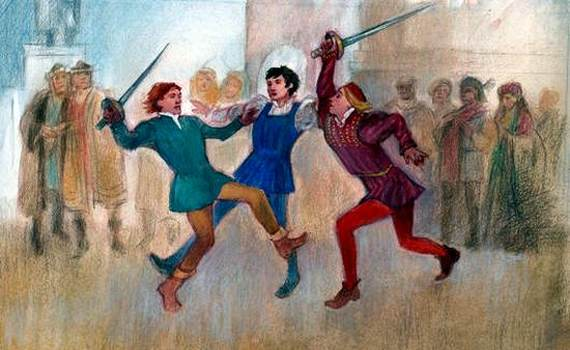

HOME
Romeo e Giulietta - Atto I
1 / 6

Arena di Verona
2 / 6

Juliet's House
3 / 6

Chiesa di Sant'Elena
4 / 6
.jpg)
Cangrande della Scala
5 / 6

Piazza dei Signori
6 / 6

Tomba di Giulietta
Un viaggio nella storia:

- Età Romana: Fondazione romana nel I secolo a.C. come "Colonia Verona Augusta". Importante centro militare e commerciale. Arena di Verona costruita nel I secolo d.C. Resti archeologici come il Ponte Pietra e il Teatro Romano.
- Medioevo: Dominio di diverse signorie, tra cui gli Scaligeri e i Visconti. Verona diventa un importante centro culturale e artistico. Costruzione di Castelvecchio e della Torre dei Lamberti. Cangrande I della Scala e il suo ruolo nella storia.
- Rinascimento: Verona sotto la Serenissima Repubblica di Venezia. Periodo di prosperità e stabilità. Opere di artisti come Mantegna, Tiziano e Paolo Veronese. Romeo e Giulietta: la tragedia di Shakespeare ambientata a Verona.
- Età Moderna: Caduta della Repubblica di Venezia e dominio austriaco. Verona diventa parte del Regno d'Italia nel 1866. Il Risorgimento e le guerre d'indipendenza. Verona città di confine tra Italia e Austria-Ungheria.
- Età Contemporanea: Verona durante le due guerre mondiali. Ricostruzione post-bellica e boom economico. Verona città d'arte e cultura, patrimonio mondiale dell'UNESCO. Arena di Verona e il Festival lirico.
- Verona oggi: Città vivace e moderna. Importante centro turistico e culturale. Economia diversificata, con settori come il turismo, l'industria e l'agricoltura. Verona città universitaria e polo di ricerca. Un viaggio attraverso i secoli, Verona conserva intatto il suo fascino storico e culturale, offrendo ai visitatori un'esperienza unica e indimenticabile.
Monumenti principali:

- L'Arena di Verona: L'Arena di Verona è un anfiteatro romano costruito nel I secolo d.C. È uno dei più grandi e meglio conservati anfiteatri del mondo, con una capacità di circa 15.000 spettatori. L'Arena è utilizzata per concerti, opere liriche e altri eventi.
- Castelvecchio: Castelvecchio è un complesso fortificato costruito nel XIV secolo dagli Scaligeri. Il castello ospita un museo d'arte con opere di Mantegna, Tiziano e Paolo Veronese. È anche sede di una biblioteca, di un archivio e di un museo di storia naturale.
- La Torre dei Lamberti: La Torre dei Lamberti è una torre medievale alta 84 metri. È la torre più alta di Verona e offre una vista panoramica della città. La torre è stata costruita nel XII secolo dalla famiglia Lamberti.
- La Casa di Giulietta: La Casa di Giulietta è un edificio medievale che si dice sia stato la casa di Giulietta Capuleti, la protagonista della tragedia di Shakespeare "Romeo e Giulietta". L'edificio è un luogo di pellegrinaggio per gli amanti di tutto il mondo.
- Piazza delle Erbe: Piazza delle Erbe è la piazza principale di Verona. È un luogo vivace e affollato, con numerosi bar, ristoranti e negozi. La piazza è dominata dalla Torre dei Lamberti e dal Palazzo del Comune.
- Il Ponte Pietra: Il Ponte Pietra è un ponte romano costruito nel I secolo d.C. È il ponte più antico di Verona e attraversa il fiume Adige. Il ponte è stato ricostruito dopo la sua distruzione durante la Seconda Guerra Mondiale.
- Il Giardino Giusti: Il Giardino Giusti è un giardino all'italiana del XVI secolo. È uno dei più bei giardini d'Italia ed è famoso per le sue grotte, le sue fontane e le sue statue. Il giardino è un luogo ideale per rilassarsi e passeggiare.
- La Basilica di San Zeno Maggiore: La Basilica di San Zeno Maggiore è una basilica romanica del XII secolo. È una delle chiese più importanti di Verona ed è famosa per la sua facciata e il suo portale. La basilica è un esempio di architettura romanica lombarda.
- Il Teatro Romano: Il Teatro Romano è un teatro romano costruito nel I secolo d.C. È situato sulle rive del fiume Adige ed è stato utilizzato per spettacoli teatrali e musicali. Il teatro è stato recentemente restaurato ed è ora utilizzato per concerti e altri eventi.
- La Valpolicella: La Valpolicella è una zona collinare situata a nord di Verona. È famosa per la produzione di vini pregiati, come l'Amarone e il Recioto. La Valpolicella è anche un luogo ideale per passeggiate e trekking. Queste sono solo alcune delle descrizioni che possono essere completate. Verona è una città ricca di storia e di cultura, con molte altre attrazioni da scoprire.
Contact Me
vrtd05000t@istruzione.it
Verona, IT
+39045501110 e +39045582475
Powered by Prof. Andrea De Luca